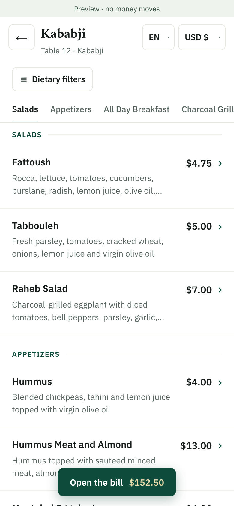
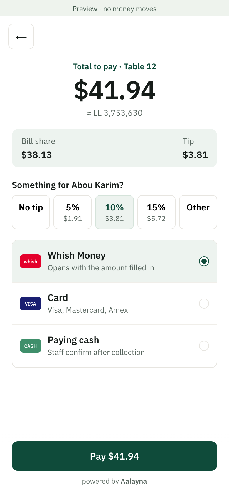
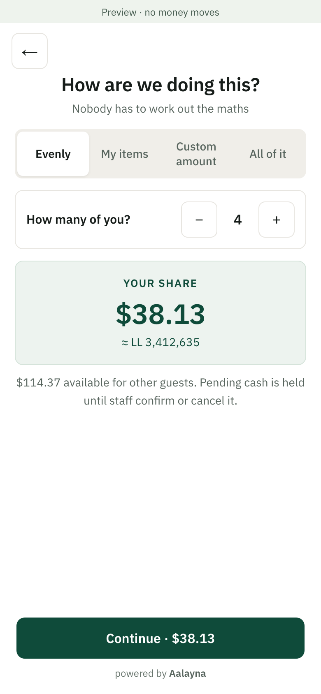
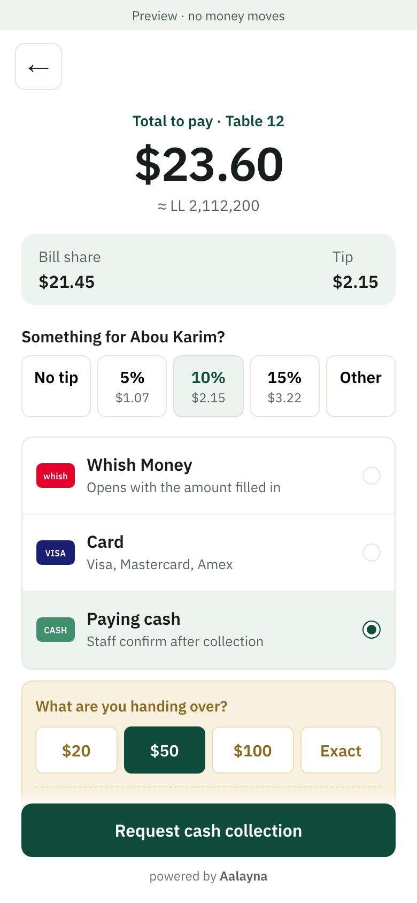
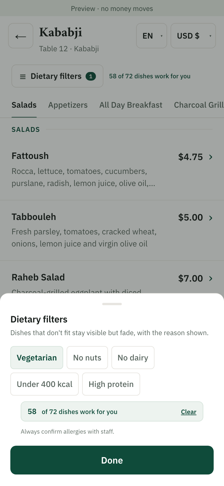
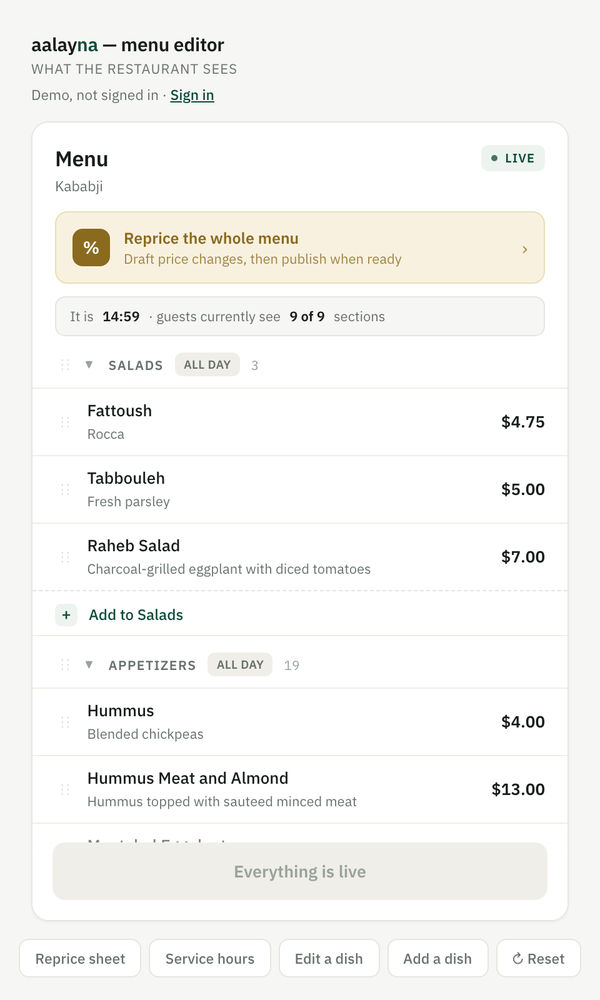

Scan & browse
Open the restaurant’s menu from the table QR. Choose a language and view prices in dollars or lira.
For restaurants in Lebanon
Guests view, split and pay from the table: one QR, their language, USD or LBP.
English · Français · العربية
Designed for Whish, card and cash
Two months free from go-live. Continue only if it works for your restaurant.

From the first scan to the last payment

Open the restaurant’s menu from the table QR. Choose a language and view prices in dollars or lira.

See the bill. Pay for the whole table, split evenly, select items or choose an amount.

Use a supported digital payment method, or request cash collection with the change needed. Staff confirm cash when it is collected.
What changes, in numbers
13 min
Assumption Calculator defaults: 20 min today, 4 min to settle on the phone, the same 3 min change trip in both.
Up to 13 minutes back per table (illustrative): no waiting to catch the waiter, for the printed bill or for the trip to the till. On a night with a queue, that is the next party seated sooner.
10%
Product The tip preselected at payment. The calculator assumes 75% of tables tip, 9% on average.
A tip prompt at the moment of payment, 10% preselected, three taps. Tables that never tipped start to, and the ones that did tip more.
1 tap
Product To rate the visit after paying. The calculator assumes 4% of Aalayna bills lead to a Google review.
One tap to rate after paying. Happy guests go straight to your Google page; unhappy ones send a private note to you instead.
your list
Product Contacts guests choose to leave. The calculator assumes 20% leave one, and half of new ones agree to offers.
A number or email left at the receipt, with separate permission for offers, becomes a list you own, linked to what each guest spent and when they last came.
Figures on the calculator are either what you type or our assumption, and each assumption is labelled. The two-month pilot replaces every assumption with your own data.
Both sides of the table
Guests browse dishes, explore options and choose how to split. The menu editor lets your team update dishes, prices and service hours before publishing.
After payment, guests can rate their visit and choose public review or private feedback in one simple flow. Feedback stays optional.


Start with your own floor
First, we check your POS and payment-provider compatibility. Once your restaurant goes live, we run Aalayna with your team for two months with no subscription fee. We review usage and results together before you decide whether to continue.
The two free months start at go-live, after POS and payment setup are ready. No automatic paid renewal: you choose whether to continue.
After your two free months
$150 / month / location
First 10 founding restaurants lock in $100/month per location.
No Aalayna commission on restaurant sales. WhatsApp and email sending are upcoming; messaging-provider charges will be confirmed before activation. Payment-provider fees may apply separately. Supported integrations and any additional setup costs are agreed before the pilot.
WhatsApp usComing next
A good visit can be the start of a lasting relationship. Give guests an optional way to stay in touch, understand their recorded visits and prepare a relevant invitation to return.
Guests can leave an email or WhatsApp number after a confirmed payment. Permission for offers is separate from their receipt, and always optional.
Link opted-in customers to confirmed bills. Recognise first-time guests, regulars and customers who haven’t visited recently.
Prepare an invitation for a specific group, review the audience and follow recorded return visits. Your team stays in control of each campaign.
Customer history and campaign planning are available in the prototype. WhatsApp and email sending are upcoming. No messages are sent today.
Before you get started
Tell us the name and version of your POS. We need to check access to your live bills and how confirmed payments return to your records. Your POS remains the system of record; we confirm compatibility before agreeing a pilot.
They can request cash collection and tell the floor which note they will hand over. The request remains pending until staff confirm collection. Guests can also ask their server for help as usual.
No Aalayna download or account is needed to browse the menu or explore the guest flow. Paying with a wallet may require that provider’s app and account. Receipt and marketing sign-ups are optional and separate.
The intended setup uses the restaurant’s own supported merchant accounts. Settlement timing and processing charges depend on the provider and agreement. The restaurant manages tip distribution under its own policy; Aalayna records attribution and payout acknowledgements.
Cash, yes: a guest requests cash from the table, and the payment counts only once a staff member confirms they collected it. Card and Whish are not live yet. They need your payment provider connected first, and we set that up and test it with you before any guest can pay that way.
Your trial starts when your restaurant goes live, after POS and payment setup are ready. There is no Aalayna subscription fee for two months, and no automatic paid renewal. If you choose to continue, the price is $150/month per location, or $100/month per location for the first ten founding restaurants. Payment-provider fees are separate; any integration setup costs and future messaging charges are agreed in advance.
The subscription is per location and includes the listed software features, menu setup and staff onboarding. The first ten founding restaurants receive the $100 monthly rate; the standard rate is $150. Payment-provider charges are separate. We agree integration scope and any additional setup costs in advance.
Your menu, table count, POS details and supported merchant-account setup. Your kitchen reviews ingredient and dietary information before it appears to guests. We arrange staff training around your service hours.
That is the goal of the retention tools: collect optional contact details with separate marketing permission, link them to confirmed visits and prepare relevant invitations. The prototype supports customer history, audience planning and recorded return visits. WhatsApp and email sending are upcoming. We do not promise additional revenue; once messaging is connected, we can measure delivery and subsequent visits with your team over time.
No. Paying and leaving a review do not require an email or phone number. Guests can request a receipt without agreeing to restaurant offers. Visit insights cover identified payers with linked bills, not everyone seated at the table.
Guests can return to the usual staff-assisted payment process. A payment should only be marked confirmed after verification; the pilot will test the fallback and reconciliation process with your team.
Ahla w sahla
Share what your team needs. We’ll help you plan the next step.